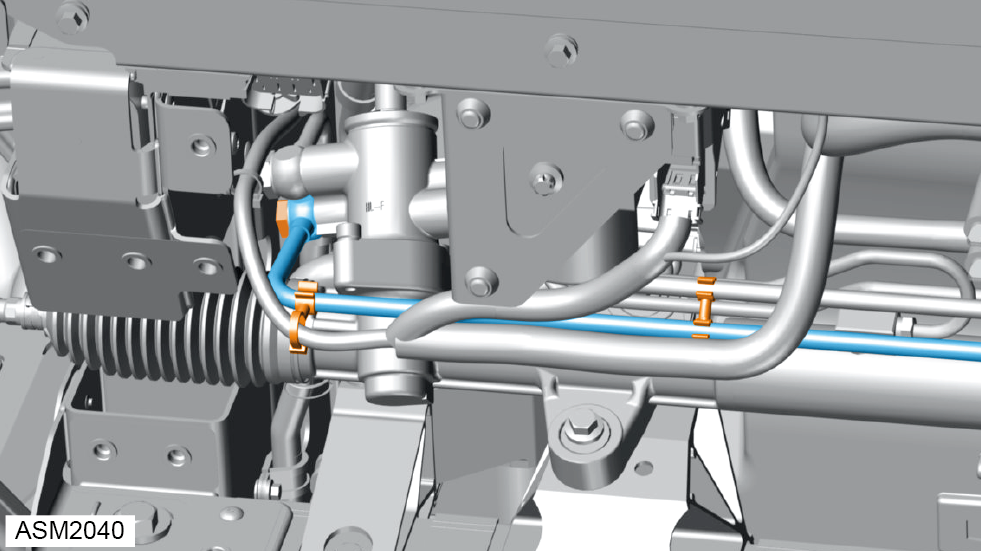
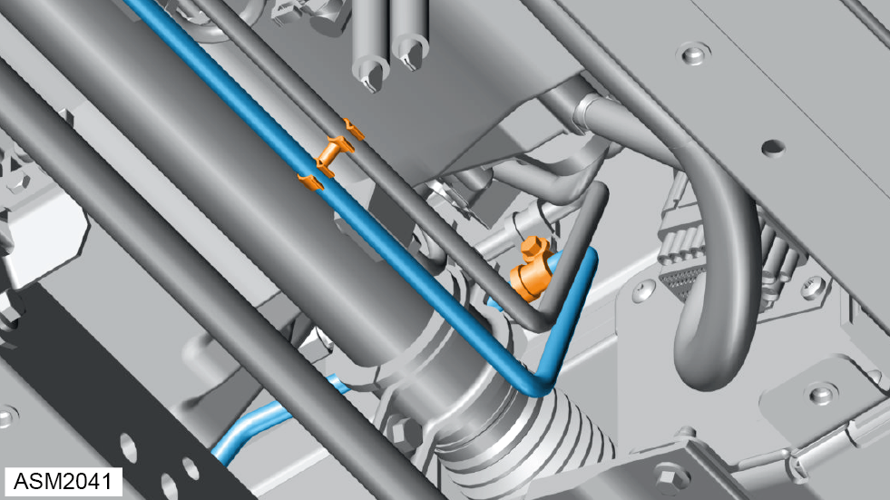
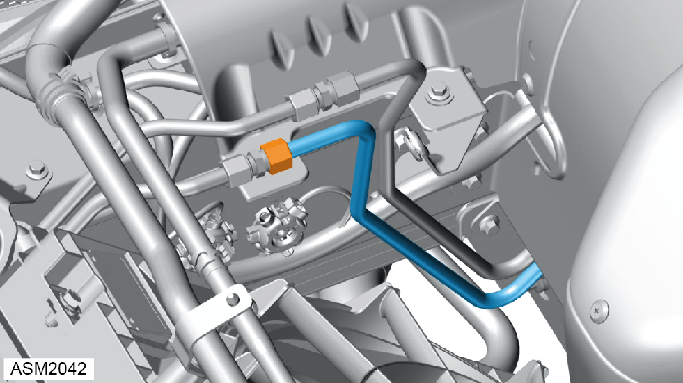

Pipe - Steering Rack to Cooler - 4 Cylinder
Print
Operation Code: 32.03.13-02
Removal
- Remove front undertray. Refer to procedure.

- Remove banjo bolt securing steering rack/cooler pipe to steering rack. Torque 32 Nm.
 Oil will discharge from steering rack to cooler pipe when removing banjo bolt. Use a container to collect oil.
Oil will discharge from steering rack to cooler pipe when removing banjo bolt. Use a container to collect oil.
Always record quantity and fitted position of washers.
- Release clips (x2) securing steering rack/cooler pipe to cooler/pump pipe.

- Release clip securing steering rack/cooler pipe to cooler/pump pipe.
- Remove M6x20 bolt securing steering rack/cooler pipe to front subframe. Torque 9 Nm.
- Open hood.

- Loosen union nut securing steering rack/cooler pipe to cooler pipe.
- Disconnect steering rack/cooler pipe from cooler pipe and discard O-ring.
- Remove steering rack/cooler pipe.
Installation
- Installation is the reverse of removal procedure except for the following:
- Renew banjo bolt sealing washers.
- Renew discarded O-ring.
- Fill power steering system. Refer to technical data.
- Bleed power steering system. Refer to procedure.